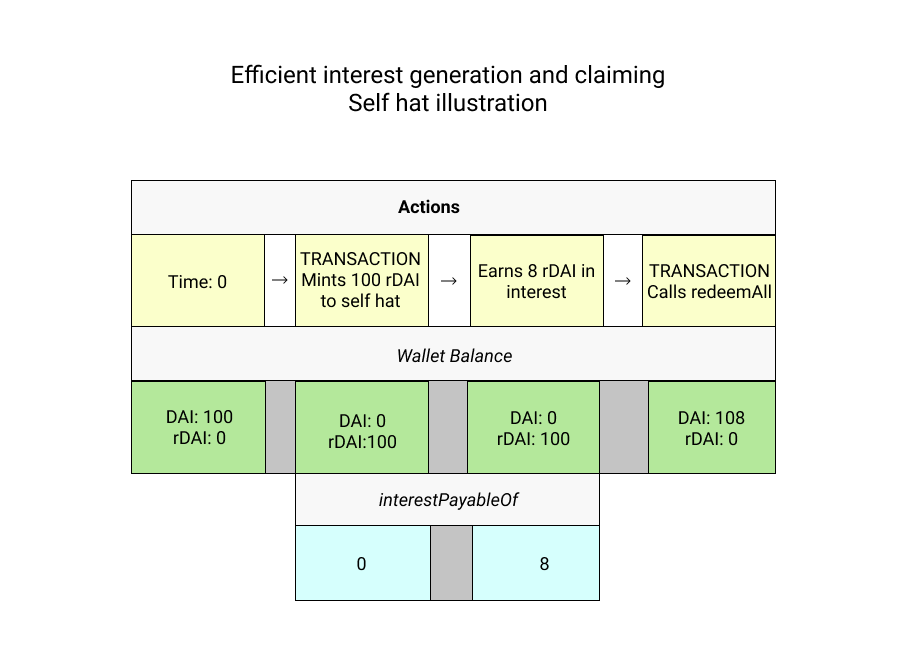

Interest
rTokens do not automatically increment token balances as interest accrues. Token balances in Ethereum can only be updated through transactions. But there is a way to query the amount of accrued interest: interestPayableOf.
Querying Accrued Interest
To understand what is happening with interest and how to claim it, there are two values that should be queried for each address:
-
rToken
balanceOf- for minters, this will be equal to the amount of the underlying ERC20 asset principal plus the amount claimed through thepayInterestfunction, for recipients this value will be 0 until thepayInterestfunction is called, which updatesbalanceOf -
interestPayableOf- this is the amount of accrued interest that may be claimed by the address
To illustrate what's going on when, let's look at a simple example where Alice mints 100 rDAI to the self hat (meaning she “redirects” all the interest to herself), accrues 8 rDAI in interest and then claims it.

The illustration above shows each step, but a more efficient flow would call redeemAll after the 8 rDAI have accrued, which calls payInterest internally:
